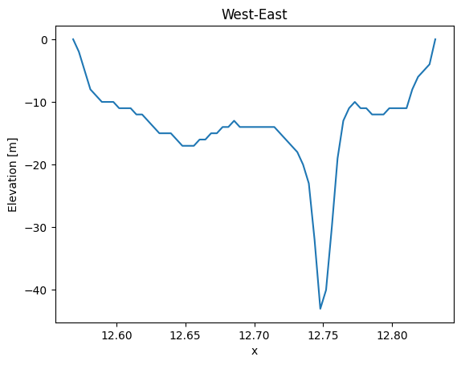
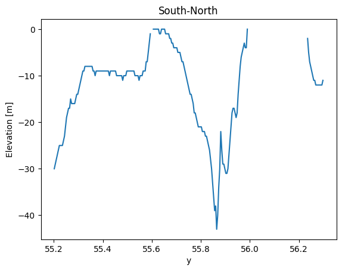

Dfs2#
Dfs2 has two spatial dimensions and adding a correct coordinate reference is important.
See Dfs2 in MIKE IO Documentation
import numpy as np
import matplotlib.pyplot as plt
import mikeio
Reading data#
ds = mikeio.read("data/gebco_sound.dfs2")
ds
<mikeio.Dataset>
dims: (time:1, y:264, x:216)
time: 2020-05-15 11:04:52 (time-invariant)
geometry: Grid2D (ny=264, nx=216)
items:
0: Elevation <Total Water Depth> (meter)
type(ds)
mikeio.dataset._dataset.Dataset
ds.shape
(1, 264, 216)
elevation = ds['Elevation']
type(elevation)
mikeio.dataset._dataarray.DataArray
elevation.shape
(1, 264, 216)
elevation.plot()
<Axes: xlabel='Longitude [degrees]', ylabel='Latitude [degrees]'>
Spatial axes#
ds.geometry
<mikeio.Grid2D>
x: [12.2, 12.21, ..., 13.1] (nx=216, dx=0.004167)
y: [55.2, 55.21, ..., 56.3] (ny=264, dy=0.004167)
projection: LONG/LAT
Extract data at location#
stn = 12.74792, 55.865
da_stn = elevation.interp(x=stn[0], y=stn[1])
da_stn
<mikeio.DataArray>
name: Elevation
dims: (time:1)
time: 2020-05-15 11:04:52 (time-invariant)
geometry: GeometryPoint2D(x=12.74792, y=55.865)
values: [-42.69764539]
da_stn.values
array([-42.69764539])
elevation.plot()
plt.scatter(stn[0],stn[1],marker='*',s=500,c='black')
plt.text(12.85, 56.0, "Sweden")
plt.text(12.3, 55.8, "Denmark")
Text(12.3, 55.8, 'Denmark')
Inline exercise#
Find the coordinates of the deepest position.
Find the index “idx” of smallest value in “elevation” (hint: np.argmin)
Find the coordinates of idx (hint: geometry.xy is a list of coordinates)
# write your code here
Slicing#
elevation.plot()
plt.axvline(stn[0])
plt.axhline(stn[1])
<matplotlib.lines.Line2D at 0x7fc31fe31b90>
elevation.sel(y=stn[1]).plot(title="West-East");

elevation.sel(x=stn[0]).plot(title="South-North");

Inline exercise#
Extract the “first” horizontal line using
isel()Find the mean value along this line (hint: use
axis="x")
# insert your code here
Writing data#
Geographical coordinates#
data_i = np.arange(24).reshape(2,4,3)
data_i.shape
(2, 4, 3)
plt.imshow(data_i[0]) # first timestep
plt.colorbar()
<matplotlib.colorbar.Colorbar at 0x7fc31fde3ed0>
grid = mikeio.Grid2D(x0 = 12.0, dx= 1.0, y0= 55.0, dy=1.0, nx=3, ny=4, projection="LONG/LAT")
grid
<mikeio.Grid2D>
x: [12, 13, 14] (nx=3, dx=1)
y: [55, 56, ..., 58] (ny=4, dy=1)
projection: LONG/LAT
Inline exercise#
plot the grid
# insert your code here
Create DataArray#
import pandas as pd
nt = data_i.shape[0]
da = mikeio.DataArray(data = data_i,
geometry=grid,
time = pd.date_range("2020",periods=nt,freq='D'),
item= mikeio.ItemInfo("Example", mikeio.EUMType.Elevation))
da
<mikeio.DataArray>
name: Example
dims: (time:2, y:4, x:3)
time: 2020-01-01 00:00:00 - 2020-01-02 00:00:00 (2 records)
geometry: Grid2D (ny=4, nx=3)
ds = mikeio.Dataset([da])
ds
<mikeio.Dataset>
dims: (time:2, y:4, x:3)
time: 2020-01-01 00:00:00 - 2020-01-02 00:00:00 (2 records)
geometry: Grid2D (ny=4, nx=3)
items:
0: Example <Elevation> (meter)
ds.to_dfs("example_geo.dfs2")
Projected coordinates#
Projection string in WKT format. Use MIKE Zero for formatting. Some shorthands are available for UTM zones, e.g. UTM-32.
pgrid = mikeio.Grid2D(x0 = 337100.0, dx= 10000.0, y0= 6122900.0, dy=10000.0, nx=3, ny=4, projection="UTM-32")
pgrid
<mikeio.Grid2D>
x: [3.371e+05, 3.471e+05, 3.571e+05] (nx=3, dx=1e+04)
y: [6.123e+06, 6.133e+06, ..., 6.153e+06] (ny=4, dy=1e+04)
projection: UTM-32
pda = mikeio.DataArray(data = data_i,
geometry=pgrid,
time = pd.date_range("2020",periods=nt,freq='D'),
item= mikeio.ItemInfo("Example", mikeio.EUMType.Elevation))
pda
<mikeio.DataArray>
name: Example
dims: (time:2, y:4, x:3)
time: 2020-01-01 00:00:00 - 2020-01-02 00:00:00 (2 records)
geometry: Grid2D (ny=4, nx=3)
pda.plot()
<Axes: xlabel='Easting [m]', ylabel='Northing [m]'>
pda.to_dfs("example_proj.dfs2")
import utils
utils.sysinfo()
System: 3.11.12 (main, Apr 8 2025, 21:35:04) [GCC 13.3.0]
NumPy: 2.2.6
Pandas: 2.2.3
MIKE IO: 2.6.0
Last modified: 2025-05-19 12:07:45.301734